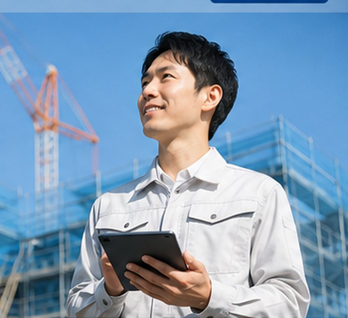

写真から案件が始まる
相談写真をそのまま現調・見積・施工箇所の記録へつなぎます。
PRODUCT 53 / LANDSCAPE & EXTERIOR
● LIVE DEMO READY造園・外構の仕事は、写真・見積・予定・担当者・施工前後の記録が分かれるほど、確認の手間が増えます。DPROは、案件ごとの「場所の履歴」として一つにつなぎます。

UNDERSTAND IN 30 SECONDS
「写真がどこにあるか」「次に何をするか」を探す時間を減らし、現場とお客様の確認を同じ流れにします。
相談写真をそのまま現調・見積・施工箇所の記録へつなぎます。
案件を開けば、見積・施工・撮影・完了確認など次の工程が見えます。
Before / Progress / Afterを同じ場所で比較し、完了承認まで残せます。
RECOMMENDED FOR
写真・見積・現場連絡が増え、案件ごとの情報が散らばり始めた事業者向けです。
BEFORE → AFTER
6 FUNCTIONS
業務を別々のツールに切り分けるのではなく、案件を中心に必要な情報をつなぎます。
お客様の要望・連絡先・相談写真を案件の入口として受け付けます。
相談から写真を探し直さない。現調写真・寸法・注意点・施工箇所を案件内に整理します。
見積の根拠を残せる。見積内容と案件ステータスをつなぎ、次の工程を明確にします。
「今どこ？」を減らす。担当者・工程・進捗を共有し、現場側の操作は短い導線にします。
現場に仕事を増やさない。撮影ポイントごとの施工前後を比較し、お客様の完了確認へつなぎます。
施工品質を写真で伝える。完了案件を次回の剪定・点検・提案候補へ戻します。
単発で終わらせない。OPERATING FLOW
LIVE PRODUCT EXPERIENCE
Owner画面・Staff画面・Customer画面を、実際の操作導線で確認できます。
CONNECTED EXPERIENCE
入口が写真相談でも、現場更新でも、同じ案件情報へつながることがDPROの中心です。
システムは、現場のやり方を増やすのではなく、散らばった確認先を減らすために使います。
FIELD & CONSULTATION

PRICE
LINE公式・ホームページ・DPROシステムを、一つの運用として整える標準構成です。初期費用・提供条件は契約内容により異なるため、DPRO SHOPでご確認ください。
相談入口から現場カルテ、完了承認、次回フォローまでを支える運用基盤。
INTRODUCTION FLOW
契約者固有の環境を作る前に、標準製品で業務の流れと操作感を確認します。
Owner / Staff / Customerの画面と業務の流れを確認。
デモを開く ↗Guide・Quick Start・詳細資料で導入イメージを確認。
Guideを見る ↗現在の受付・見積・施工・写真管理に合わせて導入範囲を確認。
DPRO SHOPで確認 ↗FAQ
剪定・植栽・外構補修など、要望と写真を案件の入口として扱えます。
現調写真・施工箇所・見積根拠を同じ案件の流れで確認できる設計です。
Before / Progress / Afterを撮影ポイント単位で整理し、完了確認につなげます。
Owner・Staff・Customerで役割と参照範囲を分ける前提で構成しています。
完了案件から次回の剪定・点検・提案候補へ戻す流れを用意しています。
はい。公開LIVE DEMOは架空データで操作感を確認できます。本番利用は契約後に事業者ごとの運用環境を設定して開始します。
GUIDE & DOCUMENTS
デモを触ったあと、必要な深さに応じて資料を確認できます。
NEXT STEP
まずはLIVE DEMOで、造園・外構の業務がどうつながるかを確認してください。